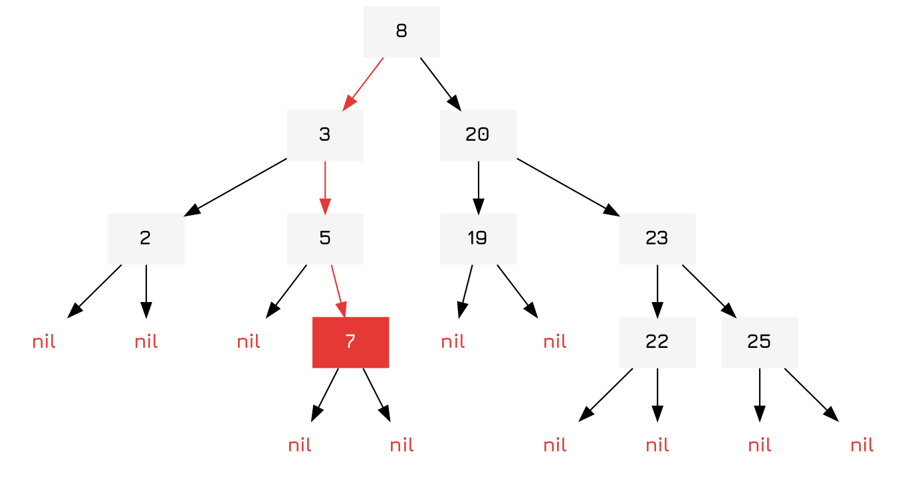
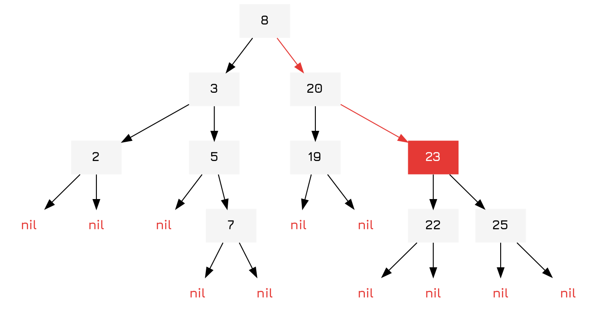

Implementing Binary Tree Sets
Table of Contents
Introduction
Binary trees are a classic datastructure, basically like a linked list but with two children nodes rather than one node. Each of the child nodes can then link to further child nodes and so on until they reach leaf nodes, which are traditionally nil.

You can also use them for sets which have a simple, linear space complexity and are fairly space efficient when compared to hash-sets. However, they do have longer access times with \(O(log(n))\) being the standard for most operations.
Implementation
Object and Constructor
To start it all off we define an object and a constructor. The constructor just takes a seq-able collection and converts it into a binary tree. This only works if elements within the collection can be compared with other elements, otherwise it will return an error.
(defrecord BintreeNode [val lesser greater]) (defn bintree-set [coll] (reduce bintree-insert nil coll))
Insert
To insert an item we simply go down the binary tree until we find the item or nil.
So to illustrate, let's imagine we added 7 to the tree from above:

The algorithm is trivial. If a key is present nothing has to be done! It can just return. If the node is nil, then it is at a leaf node and it can insert a new node. Lastly, if it is at a node it checks itself against the value of the node and chooses the lesser (left) side if it is lesser, else the right side and applies itself.
(defn bintree-insert [{:keys [val lesser greater] :as node} key] (cond (= val key) node (nil? node) (->BintreeNode key nil nil) (< key val) (assoc node :lesser (bintree-insert lesser key)) :else (assoc node :greater (bintree-insert greater key))))
Contains
To determine if the value 23 is contained within our tree we can simply compare each node, if it returns true, also return true. But if not we continue down the tree, choosing the lesser side if it is lesser, greater side if it is greater.

The implementation, therefore, is almost exactly the same as the way we inserted an element into the tree, traversing until it hits the key itself or nil.
(defn bintree-contains? [{:keys [val lesser greater]} key] (cond (= val key) true (nil? val) false (< key val) (bintree-contains? lesser key) :else (bintree-contains? greater key)))
Removing an Element
Now you may wonder, how do we remove an element from the tree? Well it's pretty simple. First you find the element in the tree (as usual) and then you make one of the children of the node the node and insert the contents of the other child into that node. A good way to do this would be to simply take the leftmost branch of then new node and then insert there when you find a nil.
(ns bintree-demo) (defn bintree-remove [{:keys [val lesser greater] :as node} key] (letfn [(insert-least [{:keys [lesser] :as node} tree] (if lesser (assoc node :lesser (insert-least lesser tree)) tree))] (cond (nil? val) nil (= val key) (insert-least greater lesser) (< key val) (assoc node :lesser (bintree-remove lesser key)) :else (assoc node :greater (bintree-remove greater key)))))
Traversals
Here we define some traversals for our tree. Traversals are simply functions that recursively visit all the nodes in the tree once.
The pre-order traversal returns a list of all nodes with the visited node first, followed by it's lesser and then greater children. This in essence provides the order of insertions needed to generate another tree of the same structure.
(defn pre-order [{:keys [val lesser greater]}] (when val (concat [val] (pre-order lesser) (pre-order greater))))
The post-order traversal does the same, but with the node last.
(defn post-order [{:keys [val lesser greater]}] (when val (concat (pre-order lesser) (pre-order greater) [val])))
Finally, the in-order traversal returns a sorted list of all nodes by visiting the lesser nodes first, itself, and then the greater nodes.
(defn in-order [{:keys [val lesser greater]}] (when val (concat (in-order lesser) [val] (in-order greater))))
Set-theoretic
Here we just implement the various set-theoretic functions.
Union
The union function is fairly simple, obtaining the post-order traversal of the first binary tree and then inserting all the elements into the second. It's time complexity is \(O(n\ log(n))\).
(defn bintree-union ([a b & rest] (reduce bintree-union a (cons b rest))) ([a b] (->> a post-order (reduce bintree-insert b))))
Intersection
This just checks if a node is contained in the other tree, and if it is, adds it to the new set of nodes. It's time complexity is \(O(n\ log(n))\).
(defn bintree-intersection ([a b & rest] (reduce bintree-difference a (cons b rest))) ([a b] (->> a post-order (filter (partial bintree-contains? b)) bintree-set)))
Difference
Lastly we find the difference between two binary trees by simply filtering out the set of nodes that are contained within the second binary tree. Like all set-theoretic functions it is variadic and accepts an arbitrary number of arguments. It's time complexity is \(O(n\ log(n))\).
(defn bintree-difference ([a b & rest] (reduce bintree-difference a (cons b rest))) ([a b] (->> a post-order (filter #(not (bintree-contains? b %))) bintree-set)))
Subset
Lastly we have a simple function that determines if one tree is a subset of another tree by checking if each item is contained in the other tree. It's time complexity is (I know you will be shocked) \(O(n\ log(n))\).
(defn bintree-subset? ([a b & rest] (reduce bintree-difference a (cons b rest))) ([a b] (not (->> a post-order (some #(not (bintree-contains? b %)))))))
Python Code
Below is also the code in python.
class BintreeNode: def __init__(self, val): self.gtr = None self.lsr = None self.val = val class Bintree: def __init__(self): self.head = None def add_node(self, val): if not self.head: self.head = BintreeNode(val) else: current_node = self.head inserted = False while not inserted: if current_node.val > val: if current_node.lsr: current_node = current_node.lsr else: current_node.lsr = BintreeNode(val) inserted = True elif current_node.val < val: if current_node.gtr: current_node = current_node.gtr else: current_node.gtr = BintreeNode(val) inserted = True else: raise Exception("duplicate key") def node_exists(self, val): exists = False if self.head: current_node = self.head found = False while not found: if current_node.val > val: if current_node.lsr: current_node = current_node.lsr else: exists = False found = True elif current_node.val < val: if current_node.gtr: current_node = current_node.gtr else: exists = False found = True else: exists = True found = True return exists def inorder(self): def traverse(node): node_list = [] if node.lsr: node_list += traverse(node.lsr) node_list.append(node.val) if node.gtr: node_list += traverse(node.gtr) return node_list return traverse(self.head) def postorder(self): def traverse(node): node_list = [] node_list.append(node.val) if node.lsr: node_list += traverse(node.lsr) if node.gtr: node_list += traverse(node.gtr) return node_list return traverse(self.head) def preorder(self): def traverse(node): node_list = [] if node.lsr: node_list += traverse(node.lsr) if node.gtr: node_list += traverse(node.gtr) node_list.append(node.val) return node_list return traverse(self.head) def union(self, other): for node in other.preorder(): self.add_node(node) def intersection(self, other): isect_set = Bintree() for node in other.preorder(): if self.node_exists(node): isect_set.add_node(node) def difference(self, other): diff_set = Bintree() for node in self.preorder(): if not other.node_exists(node): diff_set.add_node(node)